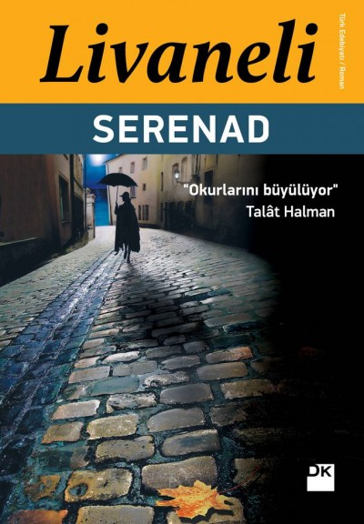
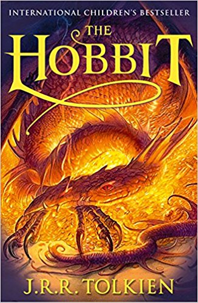
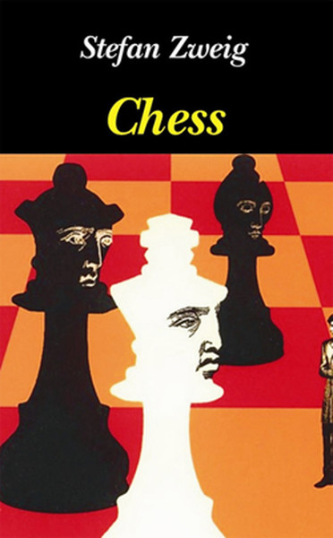

Serenad is written by Zülfü Livaneli. Its the first book ı read among Livanelli's books. Then I can't stop reading his books. The story about love,freedom of woman,the nazis etc...Everyone can know something about themselves.
Set in the post-Napoleonic era just after the French Revolution, Les Misérables is the story of Jean Valjean, a convict, who has just been released from prison after serving 19 years for stealing a loaf of bread.

1984, Winston Smith wrestles with oppression in Oceania, a place where the Party scrutinizes human actions with ever-watchful Big Brother. Defying a ban on individuality, Winston dares to express his thoughts in a diary and pursues a relationship with Julia.

When Bilbo, a peaceful hobbit, is approached by the wizard Gandalf and asked to accompany a group of dwarves to take back their kingdom from a dragon, he agrees reluctantly and faces many dangers as they approach the Lonely Mountain,
Kendi iç mahkemesiyle hesaplaşip kendi kendisini sorguya ceken icindeki 'Ben'i farkedip kabugundan siyrilarak ozunu kesfeden yani aydinlanma yasayan bir adamin öyküsü..
Zweig'in de dedigi gibi;
"Bir insan kendisini bulduktan sonra, onun bu dunyada kaybedebilecegi hiç bir sey yoktur.Ve o kisi kendi içindeki insanligi anladiktan sonra, bütün insanlari anlayacaktir."

Paulo Coelho's masterpiece tells the mystical story of Santiago, an Andalusian shepherd boy who yearns to travel in search of a worldly treasure. His quest will lead him to riches far different—and far more satisfying—than he ever imagined.

Chess Story, also known as The Royal Game, is the Austrian master Stefan Zweig’s final achievement, completed in Brazilian exile and sent off to his American publisher only days before his suicide in 1942. It is the only story in which Zweig looks at Nazism, and he does so with characteristic emphasis on the psychological. Travelers by ship from New York to Buenos Aires find that on board with them is the world champion of chess.
The title character of The Stranger is Meursault, a Frenchman who lives in Algiers (a pied-noir). The novel is famous for its first lines: “Mother died today. Or maybe it was yesterday, I don’t know.” They capture Meursault’s anomie briefly and brilliantly. After this introduction, the reader follows Meursault through the novel’s first-person narration to Marengo, where he sits vigil at the place of his mother’s death.